Welcome
Github
Singing synthesis
1.Concatenation synthesis
连接合成
Vocaloid使用方法
Vocaloid合成效果
2.Statistical parametric synthesis
参数合成
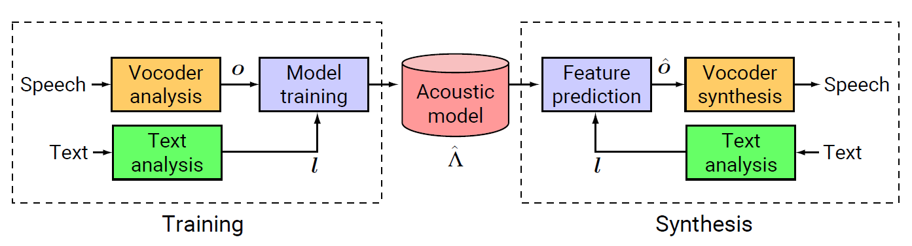
(1)An HMM-based Singing Voice Synthesis System
基于马尔可夫模型的歌声合成
1.论文原文
An HMM-based Singing Voice Synthesis System
2.基本结构
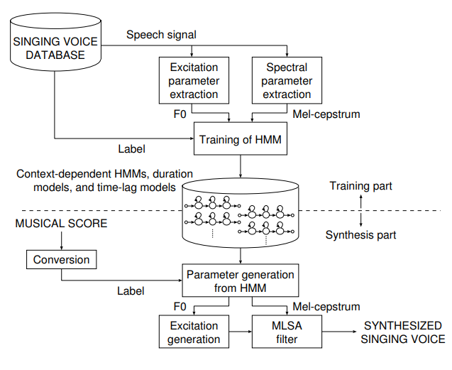
(2)Sinsy-HMM/Sinsy-DNN
1.网址链接
Link
2.XML格式乐谱事例
下载链接
(3)Parametric Singing Synthesizer Based on Wavenet
基于Wavenet的参数歌声合成
1.论文原文
A neural parametric singing synthesizer
2.官网Demo
NPSS
3.Presentation视频
Youtube Link
4.不完全实现
Github Link
5.结构及算法
<1>总体模型
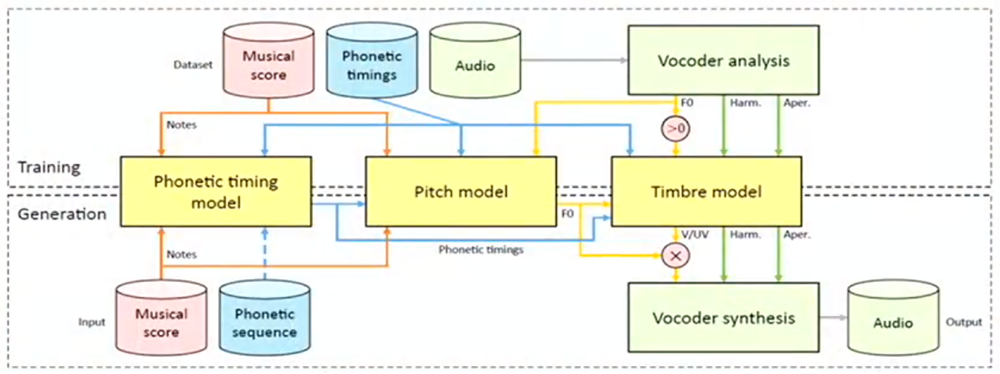
<2>Timing Model
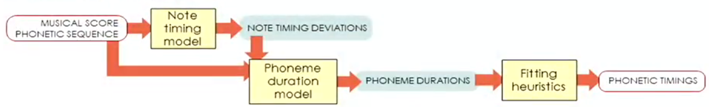
<3>Timbre Model
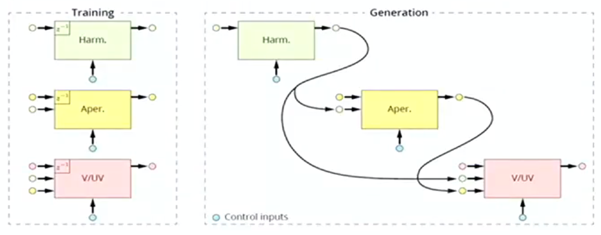
(4)Microsoft Xiaoice
微软小冰
1.论文原文
XiaoIce Band: A Melody and Arrangement Generation Framework for Pop Music
2.发展进程
3.单曲《我知我新》
(5)GANS
1.论文原文
<1>Statistical Parametric Speech Synthesis Incorporation Generative Adversial Networks
<2>Statistical Parametric Speech Synthesis Using Generative Adversarial Networks Under A Multi-Task Learning Framework
2.Python实现，开源可用
Github Link
3.Structure 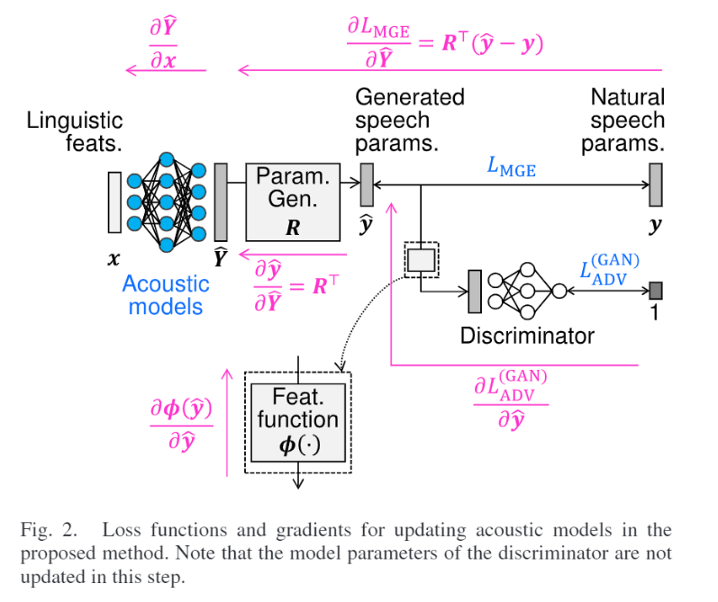
3.WaveNet
1.论文原文
Wavenet:A generative model for raw audio
2.官网Demo
Wavenet
3.Tensorflow实现
Github Link
训练数据集链接
CSTR VCTK Corpus
4.算法部分重点
<1>直接使用原始波形图作为输入，每秒16000个样本（16-bit）
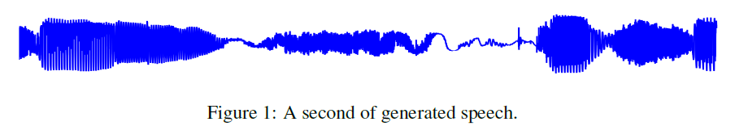
<2>使用空洞（扩展）因果卷积（Dilated Casusal Convolutional）增加感受野
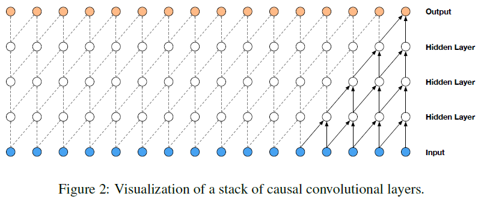 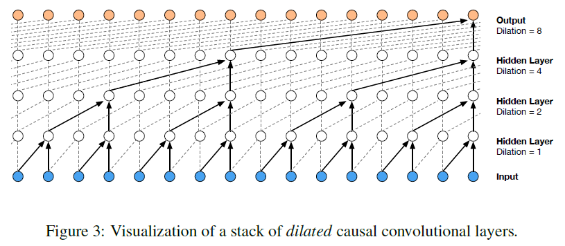
<3>使用了类似PixelCNN的Gated activation模块
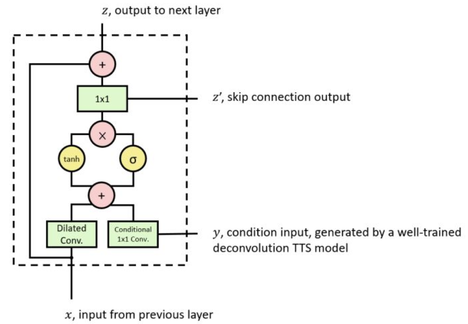 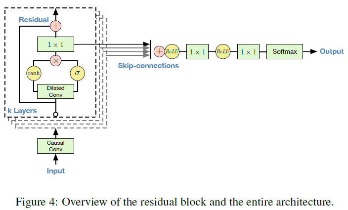
<4>参数wavenet歌唱合成模型与原始wavenet对比
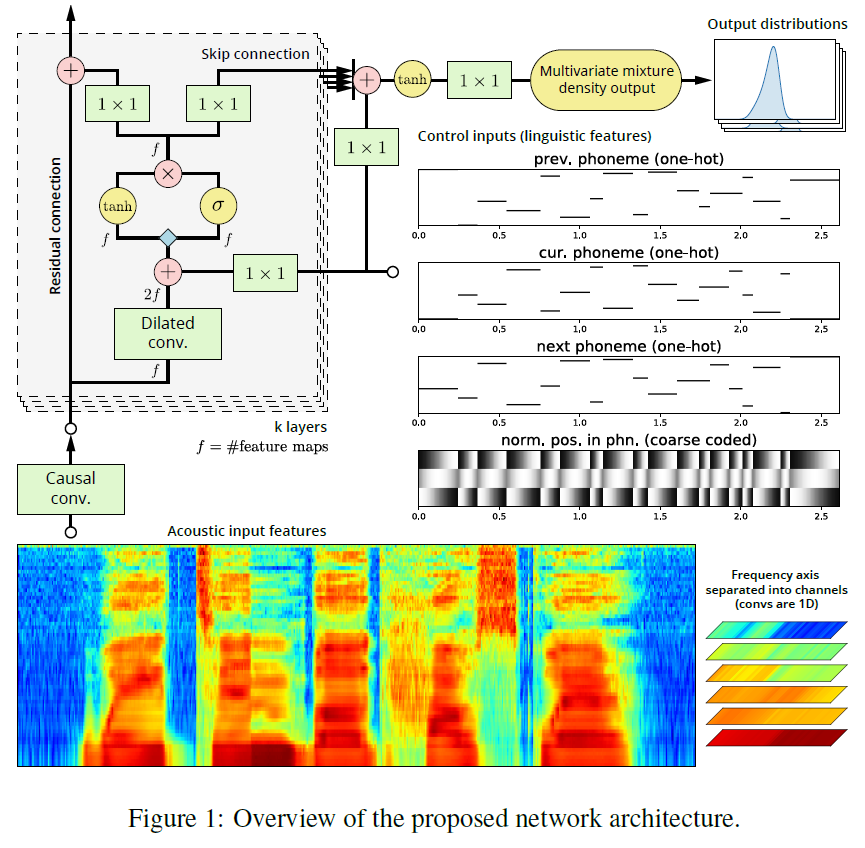
附录
(1)WORLD vocoder
Github Link
1.原理及使用方法
Link
(2)NoiseGenerators
Github Link
(3)Waveform to Spectrogram
ARSS Link
CONTACT
Find some bugs? Please let me know!
Worcester Polytechnic Institute
100 Institute Road
Worcester, MA | 01609-2280
Email: yliu26@wpi.edu